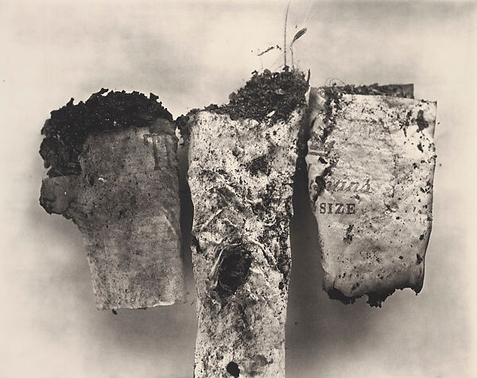

What Chain Smoking Taught Me About the Tantalean Condition
The heavy smoker's1 day isn't organized around work or meals or sleep the way other people's days are. It's organized around smoking cigarettes. There is the first one, smoked before showering, because afterwards feels bizarrely wrong in a way that's complex to describe. There is the one after food, which honestly has nothing to do with chemical dependence (at this point the reward pathways are essentially rolling in nicotine anyway) but rather punctuation. The meal needs a full stop and the full stop itself needs fire. There is also the last one before sleep, something like vespers.2 The cigarette doesn't ever 'interrupt' the day. It is the connective tissue between everything else.
Something stranger happens during the act itself. The jaw loosens, something behind the eyes clocks out.3 That lasts about as long as the exhale; by the third drag the smoker's attention has drifted into whatever the cigarette was lit to escape. Halfway through this process they're not really there anymore, They're in the meeting in an hour or the argument from this morning. The worst part is that somewhere in that drift, they notice they're already thinking about the next one. Not necessarily wanting it, but just making sure that it's in there sitting snugly within the confines of its crush-proof box. The deprecated, suddenly uninteresting, half-smoked cigarette in their hand, the one they've already waited forty-five minutes for, is already behind them while it's still lit and what's left is just the anticipation of the next one. Heavy smokers understand the recursive cigarette loop [C(n+1) = C(n)] pretty well. If you sit with it for a little while, it stops being about cigarettes pretty quickly.4
When the pack runs out at two or three in the morning, the heavy smoker reaches into the ashtray and relights a butt. Anyone who's done this knows it's a different thing than regular canonical smoking. The taste is off and the smoke is hotter, carrying whatever was left from before. They do it anyway. The space between knowing better and doing it regardless is where most of the smoking happens. Then the same person, next morning or next week, gets served a targeted ad on Instagram about C.O.P.D in between someones vacation pictures or catches a photo of a diseased lung in some waiting room, and then the creeping, insidious fear hits with almost no cognitive buffer between seeing it and deciding how to feel about it. So, obviously, he deals with it by lighting another cigarette.5 He is clearly and intensely aware of the compounding penance of the loop, but cognizance and control have nothing to do with each other, so ultimately it just becomes one more thing he's aware of while he performs his little ritual, and being aware isn't even functionally the problem, being aware is the thing he'd probably explain to you if you asked, which you won't, because he's just some guy having a smoke.
Notes
- Forty cigarettes (two packs) across a sixteen-hour day amounts to about one approximately every twenty-four minutes. Every other aspect of life turns into just the gaps; the day instead is comprised of carbon monoxide and benzene and tar.
- The author spent four days at a Benedictine monastery in 2021 and was less interested in the theological aspect than how the monks related to their own schedule. They rose at 3:30 a.m. and moved through the canonical hours in an extremely fixed, deterministic cycle. When asked what it felt like, one of the older brothers said he hadn't really felt anything specific about it in years, but he did mention (obviously as a joke) that he sometimes couldn't remember if he'd already prayed that hour or if he was about to. Nicotine replacement therapies deliver equivalent doses of the drug but nevertheless fail at extremely high rates. The assumption is that what the smoker is keeping up isn't really a nicotine level, but rather a self perpetuating sacrament. The monk would most likely empathize with this cycle, he probably would not enjoy hearing the comparison though.
- Nicotine crosses the blood-brain barrier in roughly ten seconds after inhalation (faster than intravenous heroin or morphine, which is the type of fact that sounds made up until you look it up and then wish you actually hadn't) The entire habit is conditioned around a feeling that's already gone by the time you've finished describing it.
- Tanha, usually translated as some sort of perpetual craving or thirst. The idea isn't that you want something and can't get it, it's that getting it doesn't fulfill the condition that you thought it would. Essentially the desire survives/outlives the 'having' in itself.
- The loop structure, simply put: the threat creates the dizzying anxiety, the anxiety then demands its own resolution, and the resolution itself was always the threat. Typically, self-destructive habits come with some hermetic layer of human cope, but the heavy smoker™ usually skips this part. He'll tell you exactly what he's doing and what it'll most likely cost him. It doesn't change anything. Whether that makes him more honest or just irrevocably cooked isn't something that really matters to anybody, including him. It's really quite cold but the lighter fortunately catches on the third try.
We don't really read these anymore, Sorry!